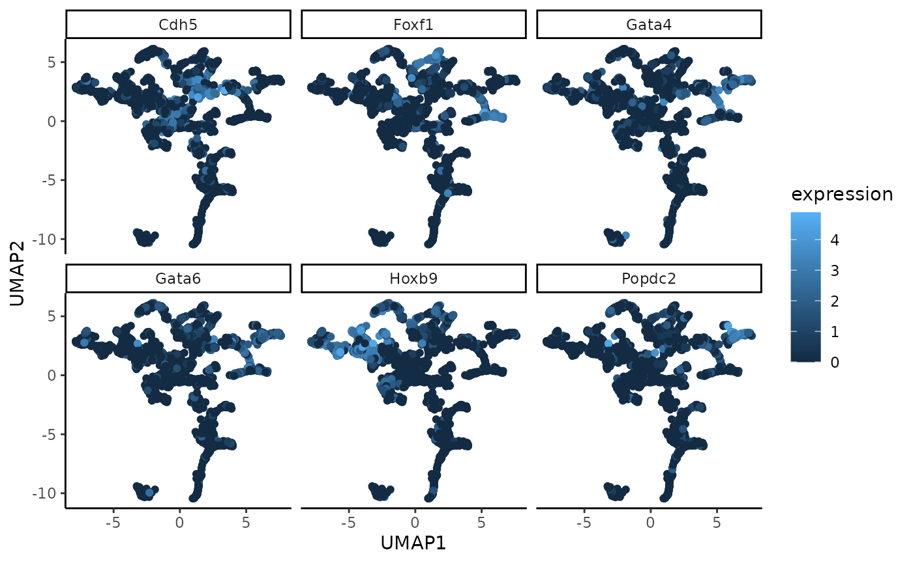

Weighted Sliced Inverse Regression (WSIR): supervised dimension reduction for spatial transcriptomics data
Max Woollard
Linh Nghiem
Shila Ghazanfar
Pratibha Panwar
Source:vignettes/wSIR_vignette.Rmd
wSIR_vignette.Rmd
library(wSIR) # package itself
library(magrittr) # for %>%
library(ggplot2) # for ggplot
library(Rfast) # for distance correlation
library(doBy) # for which.maxn
library(vctrs) # for vec_rep_each
library(umap) # for umap
library(BiocParallel) # for parallel computing in exploreWSIRParams with BiocParallel
# Packages needed to download data
#library(scran) # for logNormCounts
#library(MouseGastrulationData) # to download the data for this vignetteIntroduction
Weighted Sliced Inverse Regression (wSIR) is a supervised dimension reduction technique for spatial transcriptomics data. This method uses each cell’s gene expression values as covariates and spatial position as the response. This allows us to create a low-dimensional representation of the gene expression data that retains the information about spatial patterns that is present in the gene expression data. The resulting mapping from gene expression data to a spatially aware low-dimensional embedding can be used to project new single-cell gene expression data into a low-dimensional space which preserves the ability to predict each cell’s spatial location from its low-dimensional embedding.
Method Overview
wSIR is an extension of the supervised dimension reduction technique of Sliced Inverse Regression (SIR).
SIR is an existing supervised dimension reduction method which works by grouping together the observations with similar values for the response. For spatial transcriptomics data, this means grouping all the cells into a certain number of tiles based on their spatial position. For example, if we use 4 tiles, then the cells in the top right quadrant of the image/tissue go to one group, those in the top left to another, and so on. Each of those groups is then summarised by averaging the expression level of all cells in each group for each of the genes. From there, eigendecomposition is performed on the resulting matrix of tile-gene means, then returning the SIR directions and SIR scores.
The motivation behind wSIR is that SIR only uses each cell’s spatial position when we are separating the cells into the given number of groups/tiles. Once those groups are created, we lose the fact that some groups may be more spatially related (if they come from adjacent tiles) than other groups (if they come from opposite sides of the tissue). wSIR uses a weight matrix to incorporate the spatial correlation between all pairs of cells in the SIR algorithm. This matrix has dimension H*H, where H is the number of tiles, and the (i,j)th entry represents the distance between tiles i and j. This metrix is incorporated into the eigendeomposition step. The wSIR output has the same structure as the SIR output.
Vignette Overview
In this vignette, we will demonstrate how to use WSIR to obtain a low-dimensional embedding of gene expression data. We will then explore this embedding using the package’s built-in functions. However, this low-dimensional matrix is more importantly used for your own downstream tasks that would benefit from a lower-dimensional representation of gene expression data that preserves information about each cell’s spatial location. We perform some basic downstream analysis to demonstrate the practicality of wSIR.
Data
We use data from https://www.nature.com/articles/s41587-021-01006-2 . I have commented out the code to download it yourself (which requires packages MouseGastrulationData and scran). For this vignette and the examples in the .R function files, we simply load this data that has already been saved at data/MouseData.Rdata.
Note: there is a BioConductor limit on the size of data that can be used for examples and vignettes. To stay under that, we randomly sample 20% of the cells from each of the three samples. This random sampling is also commented out.
set.seed(2024)
#seqfish_data_sample1 <- LohoffSeqFISHData(samples = c(1,2))
#seqfish_data_sample1 = logNormCounts(seqfish_data_sample1) # log transform variance stabilising
#rownames(seqfish_data_sample1) <- rowData(seqfish_data_sample1)[,"SYMBOL"] # change rownames to gene symbols that are consistent across Google
#sample1_exprs = t(assay(seqfish_data_sample1, "logcounts")) # extract matrix of gene expressions
#sample1_coords = spatialCoords(seqfish_data_sample1)[,1:2] %>% as.data.frame()
#colnames(sample1_coords) = c("x", "y")
#seqfish_data_sample2 <- LohoffSeqFISHData(samples = c(3,4))
#seqfish_data_sample2 = logNormCounts(seqfish_data_sample2) # log transform variance stabilising
#rownames(seqfish_data_sample2) <- rowData(seqfish_data_sample2)[,"SYMBOL"] # change rownames to gene symbols that are consistent across Google
#sample2_exprs = t(assay(seqfish_data_sample2, "logcounts")) # extract matrix of gene expressions
#sample2_coords = spatialCoords(seqfish_data_sample2)[,1:2] %>% as.data.frame()
#colnames(sample2_coords) = c("x", "y")
#seqfish_data_sample3 <- LohoffSeqFISHData(samples = c(5,6))
#seqfish_data_sample3 = logNormCounts(seqfish_data_sample3) # log transform variance stabilising
#rownames(seqfish_data_sample3) <- rowData(seqfish_data_sample3)[,"SYMBOL"] # change rownames to gene symbols that are consistent across Google
#sample3_exprs = t(assay(seqfish_data_sample3, "logcounts")) # extract matrix of gene expressions
#sample3_coords = spatialCoords(seqfish_data_sample3)[,1:2] %>% as.data.frame()
#colnames(sample3_coords) = c("x", "y")
#keep1 = sample(c(TRUE, FALSE), nrow(sample1_exprs), replace = TRUE, prob = c(0.2, 0.8))
#keep2 = sample(c(TRUE, FALSE), nrow(sample2_exprs), replace = TRUE, prob = c(0.2, 0.8))
#keep3 = sample(c(TRUE, FALSE), nrow(sample3_exprs), replace = TRUE, prob = c(0.2, 0.8))
#sample1_exprs = sample1_exprs[keep1,]
#sample1_coords = sample1_coords[keep1,]
#sample2_exprs = sample2_exprs[keep2,]
#sample2_coords = sample2_coords[keep2,]
#sample3_exprs = sample3_exprs[keep3,]
#sample3_coords = sample3_coords[keep3,]
#save(sample1_exprs, sample1_coords, sample2_exprs, sample2_coords, sample3_exprs, sample3_coords, file = "MouseData.rda", compress = "xz")
data(MouseData)Supervised dimension reduction with WSIR
Parameter Study
WSIR contains two parameters, alpha and slices. Parameter “slices” is the number of groups along each spatial axis into which we split the observations in the wSIR algorithm. More slices means we could pick up more spatial information in the gene expression data, but we risk overfitting on the training set. Parameter “alpha” modifies the strength of the weight matrix. Alpha = 0 gives no spatial weighting, meaning the weight matrix becomes the identity matrix. This is equivalent to SIR. Larger alpha values means there is more weight given to spatial correlation rather than gene expression differences alone in the computation of the wSIR directions.
For this parameter study, we will use sample 1 only.
These parameters should both be tuned over some reasonable values. The function exploreWSIRParams computes and visualises the performance of wSIR for all given combinations of “slices” and “alpha”. The performance is computed from the following procedure: 1) For each combination of slices and alpha, split the data into 50% train and 50% test (where train and test halves both include gene expression data and cell coordinates). 2) Perform WSIR on the training set using the current combination of slices and alpha. 3) Project the gene expression data of the testing set into low-dimensional space using the wSIR results from step 2. 4) Evaluate wSIR’s performance by computing either the distance correlation or the correlation of distances between the projected gene expression data of the test set and the test coordinates. The evaluation metric depends whether you use “DC” or “CD” for the “metric” parameter in exploreWSIRParams. Default is “DC” (distance correlation). 5) Repeat steps 2-4 until it has been done “nrep” times (“nrep” is a parameter whose default is 5). Find the average metric value over each of the nrep iterations for this combination of slices and alpha. 6) Repeat steps 1-5 with all other combinations of “slices” and “alpha” to get an average metric value for each combination. 7) Return the combination with highest average metric value and a plot showing the performance for every combination of parameters.
Note: a key advantage of wSIR over SIR is parameter robustness. SIR’s performance deteriorates as you use larger values for “slices”. However, wSIR’s performance is relatively stable as you vary both “slices” and “alpha” among reasonable valuess (e.g among the default values we optimise over). In the following plot, the metric value becomes smaller as we increase the number of slices for alpha = 0 (which corresponds to SIR). Performance is stable for all non-zero alpha and slice combinations (which correspond to wSIR).
optim_obj = exploreWSIRParams(exprs = sample1_exprs,
coords = sample1_coords,
alpha_vals = c(0,2,4,8),
slice_vals = c(3,6,10))
optim_obj$plot
WSIR Computation
We next perform wSIR using the optimal parameter combination that we found in the previous section. We use the gene expression matrix and spatial coordinates from sample 1 here. This returns a list of results with 5 (named) slots, whose details can be found at ?wSIR::wSIR.
wsir_obj = wSIR(X = sample1_exprs,
coords = sample1_coords,
slices = optim_obj$best_slices,
alpha = optim_obj$best_alpha,
optim_params = FALSE)WSIR Results Analysis
In this section, we will demonstrate how to use the built-in analysis functions to better understand how wSIR creates a spatially-informed low-dimensional embedding. These functions all use a wSIR result as an input. Here, we use the output from the previous section, meaning we are therefore studying the result of performing wSIR on sample 1 only.
WSIR Top Genes
The findTopGenes function finds and plots the genes with highest loading in the specified wSIR directions (default is just direction 1). If a gene has high loading (in terms of absolute value), it is more important to the wSIR direction. Since the wSIR directions are designed to retain information about each cell’s spatial position, the genes with high loading should be spatially-related genes.
In the plot below, we can see which genes have the highest loading in wSIR direction 1. This is useful as it gives us an intuition about how wSIR creates the low-dimensional embedding. We can see that some of the genes are known spatial genes (e.g Cdx2, Hox-), which is what we would hope to see.
top_genes_obj = findTopGenes(WSIR = wsir_obj, highest = 8) # create top genes object
top_genes_plot = top_genes_obj$plot # select plot
top_genes_plot # print plot
Visualising WSIR Scores
The visualiseWSIRDirections function plots each cell at its spatial position, coloured by its value for each of the specified WSIR columns. This gives us an understanding of what each column of the low-dimensional embedding represents.
Below, we visualise the cells at their spatial positions, coloured by each of the 5 wSIR columns. The top left plot illustrates how, for this example, wSIR column one captures information about the “y” spatial axis, since cells with higher “y” coordinate have low wSIR1 value, while cells with lower “y” coordinate have higher wSIR1 value. wSIR2 is shown in the next plot over (the one titled “2”), and we can see that wSIR column two appears to capture information about the “x” spatial coordinate. The remaining three wSIR columns all contain information about cell types, which we can tell by the regions of high and low wSIR column values spread across the tissue.
vis_obj = visualiseWSIRDirections(coords = sample1_coords, WSIR = wsir_obj, dirs = 8) # create visualisations
vis_obj
UMAP on low-dimensional embedding
The two functions generateUmapFromWSIR and plotUmapFromWSIR create and show UMAP dimension reduction calculated on the wSIR low-dimensional embedding. We can colour each point in the UMAP plot (where each represents a cell) by its value for various genes of interest. This visualises the structure of the wSIR dimension reduction space, which is useful to gain more intuition about what the space represents. Specifically, we can see if the wSIR space contains neighbourhoods of high expression for specific genes, thus better understanding how this space is made.
To specify which genes we would like to include, we can use the output from the findTopGenes function, which automatically finds spatially-related genes by finding those with the highest loading in relevant wSIR directions. This output is then the value for the highest_genes parameter. Otherwise, we could also specify our own genes of interest if there are some specific genes we would like to see. For example, if we wanted to visualise the expression distribution for Cdx2 and Hoxb4, we could use genes = c(“Cdx2”, “Hoxb4”) as an argument in plotUmapFromWSIR (and leave highest_genes blank).
Below, we use the UMAP function to visualise the wSIR space computed on the gene expression data from sample 1. We colour each cell by their values for the 6 genes with highest value in wSIR direction 1 (as found by the findTopGenes function previously). We can see that for some of these genes, there are specific regions of high expression in the UMAP plots, suggesting that the wSIR space separates cells based on their expression for thos genes.
umap_coords = generateUmapFromWSIR(WSIR = wsir_obj)
umap_plots = plotUmapFromWSIR(exprs = sample1_exprs,
umap_coords = umap_coords,
highest_genes = top_genes_obj,
n_genes = 6)
umap_plots
Projection of new data with wSIR
A key functionality of the wSIR package is the ability to project new single-cell data into the wSIR low-dimensional space. This will allow for a low-dimensional representation of gene expression data that contains information about each cell’s spatial position even though we do not have access to the spatial coordinates for this new data. This low-dimensional wSIR embedding would be especially useful for downstream applications, like spatial alignment or spatial clustering (where we don’t have spatial coordinates).
Here, we will demonstrate the steps for that, as well as a specific application.
For each projection example, we will perform wSIR on a spatial transcriptomics dataset which includes gene expression data and spatial coordinates. We will then project a “single-cell” dataset, which only contains the gene expression matrix, into wSIR low-dimensional space.
Single-sample spatial dataset, single-sample single-cell dataset
Here, we demonstrate the steps to project a new sample single-cell dataset into wSIR low-dimensional space having already performed wSIR on the spatial transcriptomics dataset from the first sample.
We have already performed wSIR on sample 1, so here we project sample 2’s gene expression matrix into the wSIR low-dimensional space, which will therefore have an ability to predict sample 2’s (unknown at this stage) spatial locations.
sample2_low_dim_exprs = projectWSIR(wsir = wsir_obj, newdata = sample2_exprs)Check the dimension of sample 2’s low-dimensional gene expression data:
dim(sample2_low_dim_exprs)## [1] 2986 5Observe some of sample 2’s low-dimensional gene expression data:
head(sample2_low_dim_exprs)## 6 x 5 Matrix of class "dgeMatrix"
## [,1] [,2] [,3] [,4]
## embryo2_Pos29_cell103_z2 -0.9120296 -0.09763355 1.5346114 -0.6183856
## embryo2_Pos29_cell11_z2 -0.5814369 0.46531243 0.8127187 -0.4389855
## embryo2_Pos29_cell110_z2 -0.9624277 -0.88945125 1.6050322 -0.1829492
## embryo2_Pos29_cell123_z2 -1.4162837 -0.87218159 1.1186021 -0.3318756
## embryo2_Pos29_cell128_z2 -2.2063689 -1.34975293 0.8006173 0.2415998
## embryo2_Pos29_cell129_z2 -1.2241229 -1.49493300 0.4145364 -0.8972187
## [,5]
## embryo2_Pos29_cell103_z2 0.85523608
## embryo2_Pos29_cell11_z2 -0.03159254
## embryo2_Pos29_cell110_z2 -0.36624503
## embryo2_Pos29_cell123_z2 -0.65037517
## embryo2_Pos29_cell128_z2 -0.43347500
## embryo2_Pos29_cell129_z2 -0.01415204This low-dimensional gene expression data can then be used for any later tasks which would benefit from a low-dimensional embedding of the gene expression data rather than the whole gene expression data.
Multi-sample spatial dataset, single-sample single-cell dataset
wsir_obj_samples12 <- wSIR(X = rbind(sample1_exprs, sample2_exprs),
coords = rbind(sample1_coords, sample2_coords),
samples = c(rep(1, nrow(sample1_coords)), rep(2, nrow(sample2_coords))),
slices = optim_obj$best_slices,
alpha = optim_obj$best_alpha,
optim_params = FALSE)
sample3_low_dim_exprs <- projectWSIR(wsir = wsir_obj_samples12, newdata = sample3_exprs)
dim(sample3_low_dim_exprs)## [1] 4607 6Session Info
## R version 4.4.1 (2024-06-14)
## Platform: x86_64-pc-linux-gnu
## Running under: Ubuntu 22.04.4 LTS
##
## Matrix products: default
## BLAS: /usr/lib/x86_64-linux-gnu/openblas-pthread/libblas.so.3
## LAPACK: /usr/lib/x86_64-linux-gnu/openblas-pthread/libopenblasp-r0.3.20.so; LAPACK version 3.10.0
##
## locale:
## [1] LC_CTYPE=C.UTF-8 LC_NUMERIC=C LC_TIME=C.UTF-8
## [4] LC_COLLATE=C.UTF-8 LC_MONETARY=C.UTF-8 LC_MESSAGES=C.UTF-8
## [7] LC_PAPER=C.UTF-8 LC_NAME=C LC_ADDRESS=C
## [10] LC_TELEPHONE=C LC_MEASUREMENT=C.UTF-8 LC_IDENTIFICATION=C
##
## time zone: UTC
## tzcode source: system (glibc)
##
## attached base packages:
## [1] stats graphics grDevices utils datasets methods base
##
## other attached packages:
## [1] BiocParallel_1.38.0 umap_0.2.10.0 vctrs_0.6.5
## [4] doBy_4.6.22 Rfast_2.1.0 RcppParallel_5.1.8
## [7] RcppZiggurat_0.1.6 Rcpp_1.0.13 ggplot2_3.5.1
## [10] magrittr_2.0.3 wSIR_0.1.2 BiocStyle_2.32.1
##
## loaded via a namespace (and not attached):
## [1] gtable_0.3.5 xfun_0.46 bslib_0.8.0
## [4] lattice_0.22-6 tools_4.4.1 generics_0.1.3
## [7] parallel_4.4.1 tibble_3.2.1 fansi_1.0.6
## [10] highr_0.11 pkgconfig_2.0.3 Matrix_1.7-0
## [13] desc_1.4.3 lifecycle_1.0.4 farver_2.1.2
## [16] compiler_4.4.1 textshaping_0.4.0 microbenchmark_1.4.10
## [19] munsell_0.5.1 codetools_0.2-20 htmltools_0.5.8.1
## [22] sass_0.4.9 yaml_2.3.10 pillar_1.9.0
## [25] pkgdown_2.1.0 jquerylib_0.1.4 tidyr_1.3.1
## [28] MASS_7.3-60.2 openssl_2.2.0 cachem_1.1.0
## [31] boot_1.3-30 RSpectra_0.16-2 Deriv_4.1.3
## [34] tidyselect_1.2.1 digest_0.6.36 dplyr_1.1.4
## [37] purrr_1.0.2 bookdown_0.40 labeling_0.4.3
## [40] cowplot_1.1.3 fastmap_1.2.0 grid_4.4.1
## [43] colorspace_2.1-1 cli_3.6.3 utf8_1.2.4
## [46] broom_1.0.6 withr_3.0.1 scales_1.3.0
## [49] backports_1.5.0 rmarkdown_2.27 modelr_0.1.11
## [52] reticulate_1.38.0 askpass_1.2.0 ragg_1.3.2
## [55] png_0.1-8 evaluate_0.24.0 knitr_1.48
## [58] rlang_1.1.4 glue_1.7.0 BiocManager_1.30.23
## [61] jsonlite_1.8.8 R6_2.5.1 systemfonts_1.1.0
## [64] fs_1.6.4